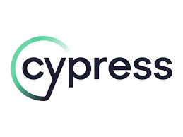
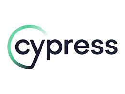

Jesus Daniel Palma
Ingeniero en sistemas
Información de Contacto
- Teléfono: +502 42564673
- Email: jesupalma0@egmail.com
- Dirección: Guatemala, Guatemala
- LinkedIn:
Habilidades
- Análisis de Datos
- JavaScript
- MYSQL
- SELENIUM
- CYPRESS
- C#
- .NET
- LINUX
Experiencia Profesional
Disresa
Desarrollo de software e infraestructura 2024 | actualidad
Trabajo en el departamento de IT donde soy responsable de brindar soporte técnico y solucionar problemas de hardware y software, aplicando mi sólida experiencia en el diseño, implementación, mantenimiento de infraestructuras y software, desde la planificación estratégica de tecnologías hasta la ejecución de planes de mantenimiento correctivo y preventivo. Mis funciones incluyen gestionar y mantener sistemas informáticos, redes y servidores, asegurando su rendimiento óptimo y seguridad. Además, colaboro con otros miembros del equipo para implementar nuevas tecnologías y actualizaciones la implementación y administración de sistemas operativos (Windows, Linux), redes (LAN, WAN, VPN), Software (Python, Java y C#, SAP), así como la configuración y optimización de servicios y aplicaciones empresariales (SQL Server, SAP). Proporciono capacitación y soporte a los usuarios finales, ayudándoles a utilizar de manera efectiva los recursos y sistemas de IT.
- Desarrollé y mantuve infraestructura IT, apoyando tanto al área de QA como al área de infraestructura
- Creé y realicé QA a páginas web, asegurando su funcionalidad y seguridad.
- Implementé y gestioné medidas de ciberseguridad para proteger la infraestructura IT.
- Colaboré con equipos de desarrollo e infraestructura para optimizar y asegurar los sistemas.
Royal Caribbean, Conduent
IT | 2021-2023
TEstuve involucrado en tareas de gestión de proyectos como despliegues de software, actualizaciones de sistemas y expansiones de redes. Colaboré estrechamente con las partes interesadas para recopilar requisitos, definir el alcance del proyecto y desarrollar planes de implementación. Además, realicé pruebas exhaustivas y controles de aseguramiento de calidad para garantizar que todos los proyectos de TI cumplieran con los estándares y objetivos organizacionales.Como Analista de Control de Calidad, cuento con una sólida experiencia en la realización de pruebas manuales y automáticas exhaustivas para garantizar la calidad y fiabilidad del software. Mi enfoque meticuloso en la ejecución de pruebas funcionales, de regresión y de integración me ha permitido identificar y
- Gestioné y prioricé tareas y defectos utilizando Jira y metodologias agiles
- el rendimiento del software utilizando JMeter y JBLAZER.
- Probé APIs utilizando Postman y SoapUI.
- Colaboré con equipos de desarrollo para identificar y resolver problemas críticos.
Certificaciones
- Scrum and ORM
 

.png)
.png)
.png)